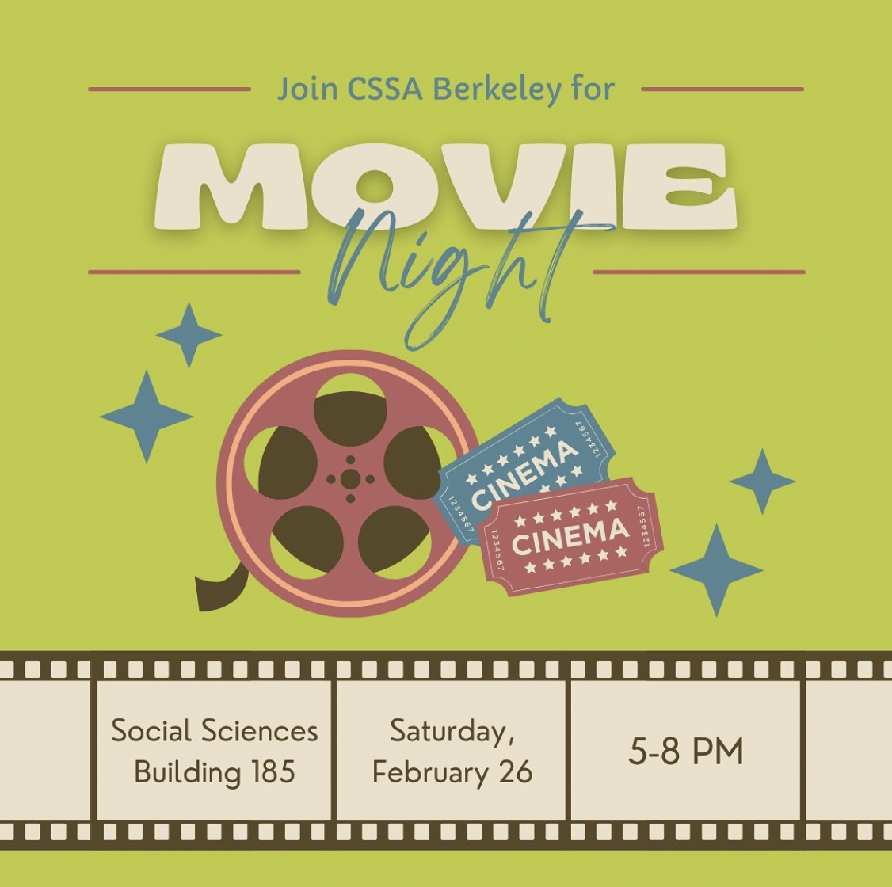

The CSSA holds weekly meetings (sometimes replaced by special events) each with its own specific topic. The topics range from fun social events (such as movie or trivia nights) to guest speakers to a range of informational and planning meetings. Meetings we've had in the past have included tasting food with sour taste receptors blocked by Miracle Berries, debunking cognitive science themed movies, planning various events, a discussion on Brain Machine Interfaces led by a graduate student from Professor Carmena's lab, a presentation by the Cognitive Technology group, a talk on theoretical neuroscience given by a graduate student in the Redwood Center, and more! Check the upcoming events below to see what the topic for the next meeting is.
Outreach Program
As members of the CSSA, we are grateful to have received the exposure to science and education that got us all hooked on brains. In order to give something back, we started an educational outreach program in which we teach basic neuroscience at local schools - particularly those with less access to hands-on science programs.Through the use of exciting presentations, hands-on demonstrations, and open discussions, we aim to impart our knowledge and passion to the students. Topics we cover include basic neuroanatomy, the connection between language and thought, how brains can be connected to computers, the nature of the mind, and how we can use scientific principles to improve our learning, health, and memory. The centerpiece of every lesson is a preserved human brain that students can touch and hold!
Academic/Career Events
Maybe you are a student wondering if cognitive science is the right major for you. Perhaps you are a cog sci major who wants some advice with a specific interest, choosing classes, or it could be that you just like free snacks. In any case, “Why Cog Sci?” and other similar events feature presentations on the various disciplines of cognitive science, interactive demonstrations, and an overview of the major requirements. If you are considering the cognitive science major or are already decided on CogSci and want to learn more then these are the events for you!
Social Events
If you're interested in getting to know other CogSci majors, people interested in CogSci, or some faculty members, don't miss out on our social events! This past semester CSSA hosted an outing to a themed night at the Exploratorium, a dinner with a CogSci Faculty member (part of our Professors Eat Too event series), and a karaoke night, with much more planned for the future!
NOTE: CSSA's first internal meeting and general meeting will be held this Wednesday 2/2 from 5-6pm and 6-7pm, respectively. Join through this Zoom link!
Upcoming Events

CSSA is hosting a movie night tomorrow at 5pm! This is the perfect opportunity to relax after (or before) midterms with some amazing people :)